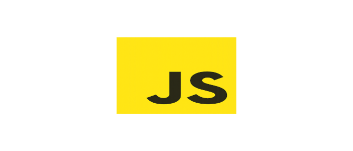
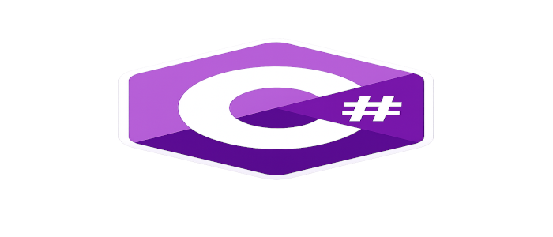
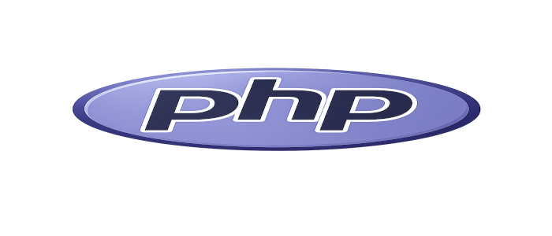

As 5 Linguagens Mais Utilizadas pelos Desenvolvedores Back-end
1. JavaScript (Node.js)
O JavaScript também é muito utilizado no desenvolvimento back-end por meio do ambiente de execução Node.js. Essa tecnologia permite criar servidores, APIs e aplicações escaláveis utilizando a mesma linguagem empregada no front-end. Sua rapidez, grande comunidade e vasta quantidade de bibliotecas tornam o JavaScript uma das principais escolhas para o desenvolvimento web moderno.

2. Python
Python é uma linguagem conhecida por sua sintaxe simples e fácil de aprender. No desenvolvimento back-end, é amplamente utilizada para criar aplicações web, APIs e sistemas de automação. Além disso, destaca-se em áreas como inteligência artificial, ciência de dados e aprendizado de máquina, sendo uma das linguagens mais versáteis da atualidade.
3. Java
Java é uma linguagem robusta, segura e muito utilizada em sistemas corporativos de grande porte. Sua estabilidade e desempenho fazem dela uma excelente escolha para bancos, empresas, plataformas de comércio eletrônico e aplicações que exigem alta confiabilidade. O framework Spring é um dos mais utilizados para o desenvolvimento back-end com Java.
4. C#
C# é uma linguagem desenvolvida pela Microsoft e amplamente utilizada na criação de aplicações web, sistemas empresariais e serviços em nuvem. Com o framework .NET, os desenvolvedores conseguem construir aplicações seguras, rápidas e escaláveis, sendo bastante utilizada em ambientes corporativos e no desenvolvimento de APIs.

5. PHP
PHP é uma das linguagens mais tradicionais do desenvolvimento web. Ela é utilizada principalmente na criação de sites dinâmicos, sistemas de gerenciamento de conteúdo e aplicações para a internet. Plataformas populares, como WordPress, foram desenvolvidas com PHP, que continua sendo uma linguagem relevante devido à sua facilidade de hospedagem e ampla compatibilidade com servidores web.
